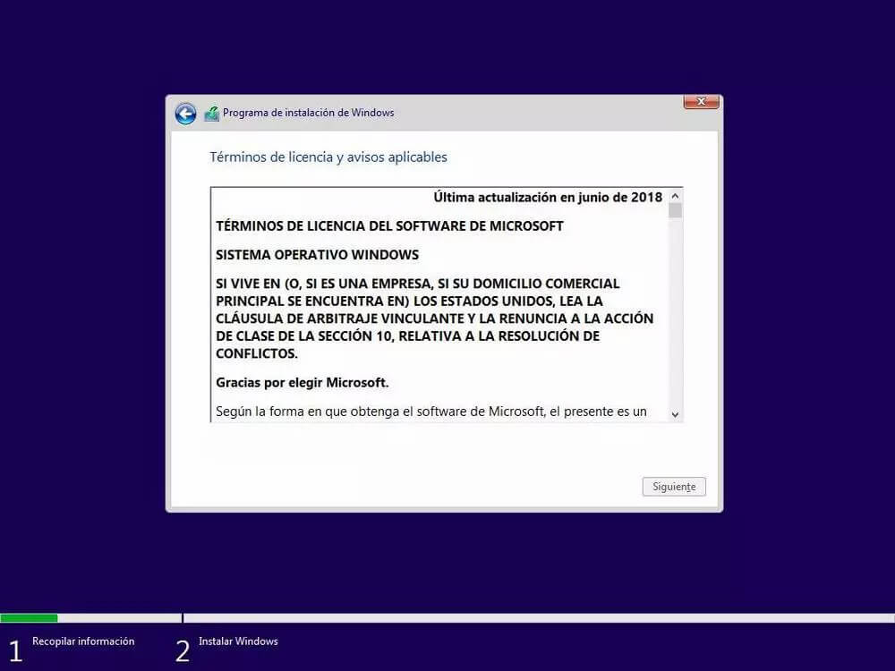

X
back
Serrar
Acepto los términos de licencia
Siguiente
Un saludo, espero que estés bien. Quiero que sepas que esta herramienta nació a partir de la necesidad de poder llegar a muchos mas como tu para que puedan aprender y practicar el proceso de instalación de un Sistema Operativo, en este caso Windows 10. Deseo que te sea de provecho y puedas disfrutarlo. Comparte este contenido para que muchos más puedan ser parte de este aprendizaje. Si te gustaría tener una aplicación similar o te quisieras hacer alguna sugerencia o comentario sobre la aplicación, te animo a que puedas ponerte en contacto conmigo. presiona en el botón para contactarme.
